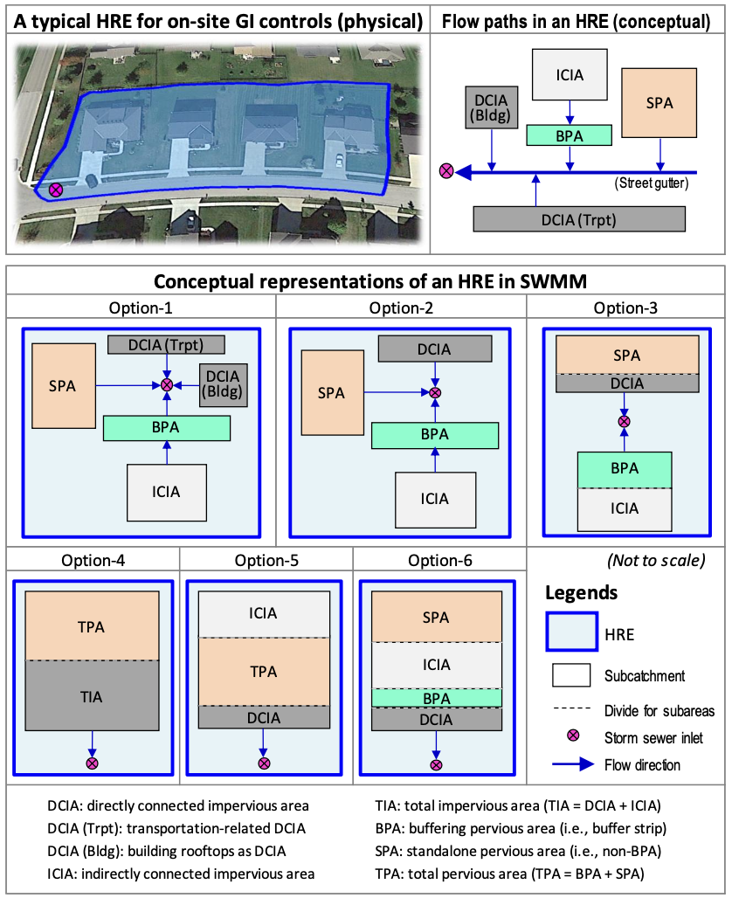
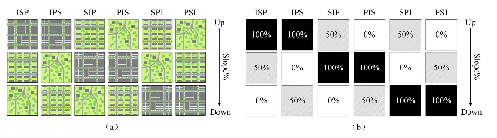

class: left, middle, title-slide # Пространственная дифференциация гидрологических свойств городской территории ## Оценка в контексте поверхностного стока Синопсис курсовой работы <br> Капитонов Кирилл, МПДПГ-261 Научный руководитель: Матасов Виктор Михайлович, к.г.н., доцент ФГГТ --- class: dense # От инфраструктуры — к пониманию территории .left-column[ Городская территория рассматривается через её участие в формировании, удержании и перераспределении дождевого и снеготалого поверхностного стока. Для планирования важно понимать: - как различаются гидрологические свойства территорий; - как эти различия связаны с городской морфологией; - как они проявляются на разных масштабах. **Проблема**: насколько разные методы учитывают пространственную структуру города и дают сопоставимые представления о гидрологических различиях территорий? ] .right-column[ <p></p> .source[По Lee et al., 2018, рис. 5] ] <br> .future[ **Пространственные различия** → Типы территорий → Подходы к управлению ] --- # Цель и задачи **Цель** Выявить пространственные различия гидрологических свойств городских территорий и их связь с морфологией городской среды на основе сопоставления подходов к оценке таких свойств в контексте поверхностного стока **Основные задачи** 1. Рассмотреть теоретические подходы и систематизировать методы оценки 2. Сопоставить способы учета городской морфологии, пространственных связей и масштаба 3. Провести ГИС-оценку выбранной территории с использованием отобранных подходов 4. Интерпретировать пространственные различия и определить возможности и ограничения методов для характеристики дифференциации свойств территории --- class: dense # Исследовательский вопрос и гипотезы Как гидрологические различия территорий связаны с морфологией городской среды и насколько сохраняются при изменении метода и масштаба оценки? **Гипотезы** 1. При близком составе покрытий территории различаются по гидрологическим свойствам вследствие различий в конфигурации и связности компонентов 2. Учет конфигурации и связности меняет оценки по сравнению с подходами, основанными преимущественно на площадных соотношениях покрытий 3. Объясняющее значение морфологических характеристик меняется с масштабом анализа <p></p> .source[По Yin et al., 2025, рис. 2] --- # Исследовательский подход <!-- ### Теоретическая рамка Городская гидрология · Городская морфология · Экосистемные услуги --> **Логика исследования** Обзор литературы → Сопоставление подходов → ГИС-апробация → Интерпретация пространственных различий **Предполагаемые данные** - Слои проницаемости покрытий, застройки, озеленения, водоемов - Рельеф и пространственные связи - Сведения об осадках, снеготаянии и водоотведении .future[ Конкретный кейс и набор методов будут определены по итогам обзора и оценки обеспеченности данными. ] --- # Ожидаемые результаты **Систематизация подходов** Сопоставление по учитываемым процессам, показателям, масштабам, единицам анализа и данным **Пространственные оценки** Сравнительные характеристики гидрологических свойств выбранной городской территории **Интерпретация** Выводы о связи оценок с морфологией городской среды и об их зависимости от метода и масштаба анализа .future[ Перспектива продолжения: типы территорий и дифференцированные подходы к управлению стоком. ] --- class: bibliography # Источники 1. Сиваев С. Б., Абдуллаев А. М., Смирнов О. О., Андреева Е. С., Залян Э. С., Летуновский А. В. (2023). Ливневая канализация в современном городе. От тарификации до инфильтрации. М.: Издательский дом ВШЭ. 120 с. 2. Congressional Research Service. (2015, September 15). Green Infrastructure and Issues in Managing Urban Stormwater. Report R43131. 3. Djamaluddin, J., Zubair, H., Dariati, T., Demmalino, E. B., Iswoyo, H., & Arif, S. (2025). Urban Landscape and Surface Runoff Management: A Review. Engineering, Technology & Applied Science Research, 15(6), 30501–30507. 4. Kuller, M., Bach, P. M., Roberts, S., Browne, D., & Deletic, A. (2019). A planning-support tool for spatial suitability assessment of green urban stormwater infrastructure. Science of the Total Environment, 686, 856–868. 5. La Rosa, D., & Pappalardo, V. (2020). Planning for spatial equity — A performance based approach for sustainable urban drainage systems. Sustainable Cities and Society, 53, 101885. 6. Lee, J. G., Nietch, C. T., & Panguluri, S. (2018). Drainage area characterization for evaluating green infrastructure using the Storm Water Management Model. Hydrology and Earth System Sciences, 22, 2615–2635. 7. Lim, T. C., & Welty, C. (2017). Effects of spatial configuration of imperviousness and green infrastructure networks on hydrologic response in a residential sewershed. Water Resources Research, 53(9), 8084–8104. 8. Liu, Z., Han, Z., Shi, X., Liao, X., Leng, L., & Jia, H. (2023). Multi-objective optimization methodology for green-gray coupled runoff control infrastructure adapting spatial heterogeneity of natural endowment and urban development. Water Research, 233, 119759. 9. Smets, V., Verbeiren, B., Hermy, M., & Somers, B. (2019). Urban Spatial Configuration and Functional Runoff Connectivity: Influence of Drainage Grid Density and Landscape Metrics. Water, 11(12), 2661. 10. Yin, Z., Liu, G., Zheng, Z., & Li, X. (2025). Sustainable Stormwater Management: Runoff Impact of Urban Land Layout with Multi-Level Impervious Surface Coverage. Sustainability, 17(8), 3511. 11. Zhu, Y., Burlando, P., Zhang, Y., Chi, D., Wang, J., Qiu, Y., Bonatesta, M., Zou, W., Geiß, C., Tan, P. Y., & Fatichi, S. (2025). The influence of urban morphological changes on pluvial flooding during urban expansion. Sustainable Cities and Society, 135, 107018.